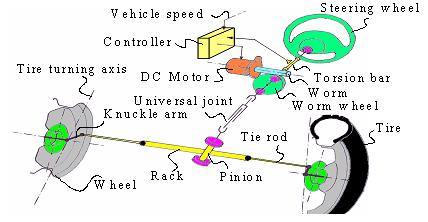
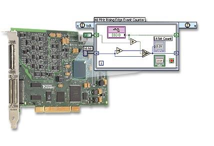
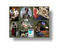

Current Projects
Past Projects
Advanced Vehicle Control Systems
Copier Paperpath Control
Disk Drive Control
Intelligent Machining
ILP Summary '96-'97
 Human Mechatronics
Human Mechatronics
-->Human Assistive Systems: Bio-Mechatronics
-->Intelligent Power Assist Systems Auto-Adaptive to Varying Human Characteristics and Environmental Conditions
-->Intelligent Power Assist Steering System
Intelligent Power Assist Steering System
Introduction
| Steering System
| Experimental Setup
| Research Topics
| Related Publications
| Researchers
| Sponsors

Electric power steering (EPS) systems have recently become a popular choice for automotive steering, particularly in small and medium-sized cars. Compared to conventional hydraulic power steering, EPS has several advantages, such as an electronically variable steering boost function, improved operational efficiency and reduced environmental emission. Although steer-by-wire possesses similar advantages, it has only found limited acceptance in the automotive industry. Consequently, EPS will remain the predominantly used steering system technology for the next decade.
Currently, EPS systems are equipped with a torque sensor to measure the driver's steering effort. A torsion bar element, as shown in Fig.1, is widely used to detect the driver's intention. However, the measured torque is not exactly equal to the applied torque. This discrepancy is caused by the physical connection between the driver and front wheels, and the steering column dynamics. In addition, disturbances such as road-tire interaction contribute to the difference between sensed and actual torque values.
Upon receiving the torque signal, the controller computes the desired motor current to assist the driver. The conventional EPS controller determines the required motor current by amplifying the torque sensor signal by a certain non-linear gain.

Fig. 1 Typical mechanism of electric power steering

The primary limitation of conventional controllers lies in their indiscriminate amplification of the sensed torque. Conventional EPS controllers do not take into account other factors that may affect steering performance, such as the road-tire interaction, and the history of steering assistance.
The proposed controller considers these factors as well, and accurately estimates the steering effort applied by the driver. Therefore, the new controller does not blindly assist driver, but evaluates how much assistance is required and then commands the motor to provide the appropriate torque.
As a result, this Intelligent Power Assist Steering System is more sophisticated and delivers smoother performance than the conventional system.

Combining National Instruments' FPGA board and software enables us to construct a feedback loop consisting of sensors, real-time control, and actuation. All control has been implemented on a modular experimental electric power steering test bench. Features include driver steering wheel with brake and acceleration inputs, mechanical spring mass representation of road tire interaction, and visual road feedback through simulation. This test bench has the ability to be configured with a simple EPS steering system or even with a steer-by-wire system.



- Disturbance Observer
- Friction Compensation
- Nonlinear Sliding Mode Control
- Passivity
- H-Infinity Robust Control

-
A. El-Shaer, S. Sugita, and M. Tomizuka, "Robust Fixed-Structure Controller Design of
Electric Power Steering Systems," American Control Conference, 2009.
Conference | Abstract | HTML | PDF -
S. Sugita, A. El-Shaer, and M. Tomizuka, "Human Machine Interaction in Vehicle Steering," SAE World Congress, 2009.
Conference | Abstract | HTML | PDF

Researchers
Graduate Students
Visiting Scholar
- Oshima, Atsushi | Homepage | Email
- Sugita, Sumio (Left) | Homepage | Email
- Yasuyuki Matsuda (Left) | Homepage | Email
- Kiyotaka Kawashima (Left) | Homepage | Email
Undergraduate Students
- Anand Subramanian (Graduated) | Homepage | Email
- Jack Wang (Graduated) | Homepage | Email
- Justus Yeung (Graduated) | Homepage | Email
- Kevin Lomeli (Graduated) | Homepage | Email